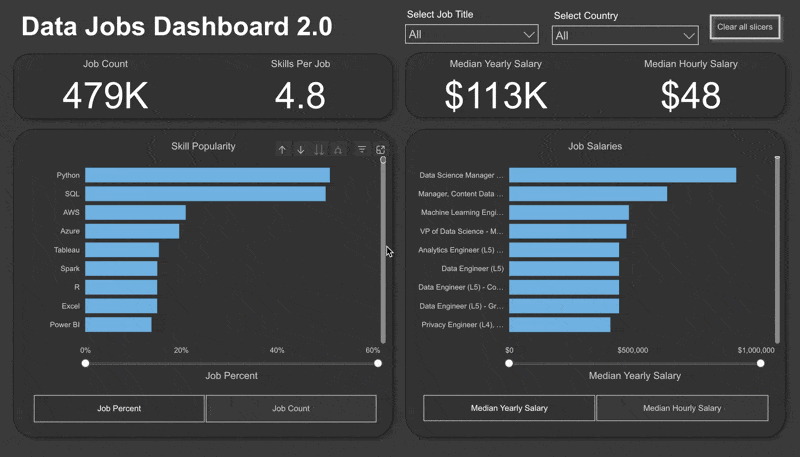
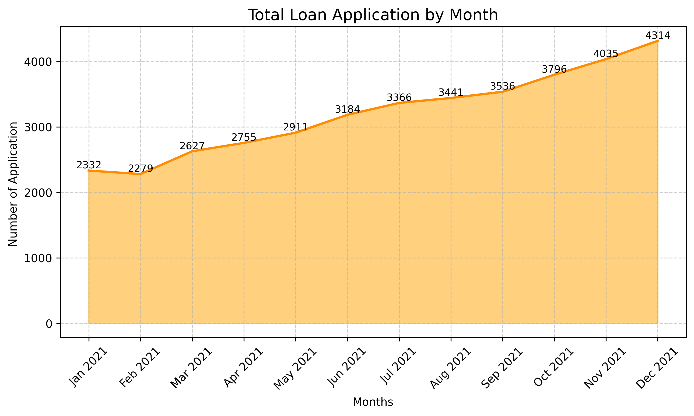
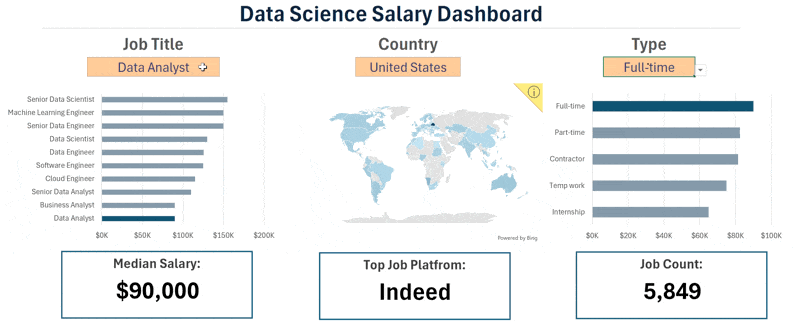

Data Analyst with an engineering background, skilled in Python, SQL, Power BI, and Advanced Excel[cite: 2]. Experienced in analyzing 780K+ records, evaluating $400M+ financial portfolios, and building automated dashboards that drive business decisions[cite: 2].
As a B.Tech Electrical Engineering graduate from Madhav Institute of Technology & Science, Gwalior, Madhya Pradesh, I bring structural discipline to complex big data[cite: 2]. I specialize in designing and engineering end-to-end processing pipelines, safely parsing string-encoded metadata arrays, and establishing relational models[cite: 2].
With hands-on execution navigating pipelines scaling past 780,000+ data assets, evaluating $400M+ financial portfolios, and tuning analytical rendering configurations, my core strategy focuses on scaling operational visibility, optimizing query structures, and mitigating risks[cite: 2].

Query-engineered a comprehensive PostgreSQL database analyzing a dense relational footprint of 780,000+ technical job posting records[cite: 2]. Formulated structured Common Table Expressions (CTEs), multi-layered analytical subqueries, and advanced optimizations to isolate top-paying configurations and eliminate redundant scanning structures[cite: 2].

Evaluated a comprehensive credit lending infrastructure representing a $400M+ active portfolio value spanning over 35,000+ client accounts[cite: 2]. Built structural classification pipelines to isolate non-performing loans and establish risk tracking[cite: 2].

Structured a robust HR compensation tracking framework aggregating granular compensation bounds across 10,000+ technical practitioners and 12+ industry specialties[cite: 2]. Deployed automated calculation loops utilizing XLOOKUP models and nested logic matrices[cite: 2].
Engineered a dynamic Power BI data model to analyze hyper-local grocery delivery performance across shifting regional dimensions[cite: 2]. Programmatically mapped multi-variable processing stages using Python (Pandas) to isolate category trends and automate tracking dashboards[cite: 2].
Architected relational schema definitions utilizing PostgreSQL[cite: 2]. Formulated deeply nested Common Table Expressions (CTEs), multi-level analytical window formulas, and indexed clusters to minimize latency overheads on dense unstructured data matrices[cite: 2].
Ingested and wrangled a massive global dataset exceeding 780,000+ technical job posting records using the Hugging Face API ecosystem[cite: 2]. Fabricated data-cleansing pipelines using abstract syntax trees to securely isolate string arrays into operational schemas[cite: 2].
Modelled historical commercial retail parameters across 45 distinct geographical store nodes[cite: 2]. Aggregated complex macroeconomic trends (including unemployment indexes and localized fuel cost charts) to evaluate sales seasonality variables[cite: 2].
Rigorous end-to-end curriculum charting deep data processing, relational architectures, cleaning logic, and descriptive metric storytelling dashboards[cite: 2].
Deep-dive technical querying validation involving advanced optimization algorithms, layered windows, and transaction schema tuning environments[cite: 2].
Goa, India[cite: 2]